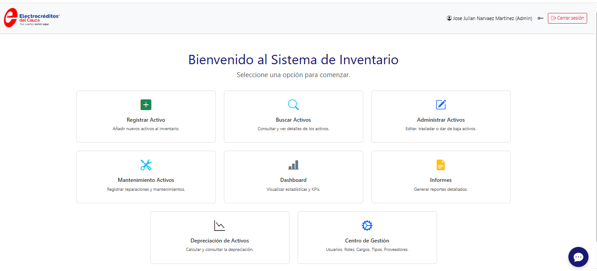
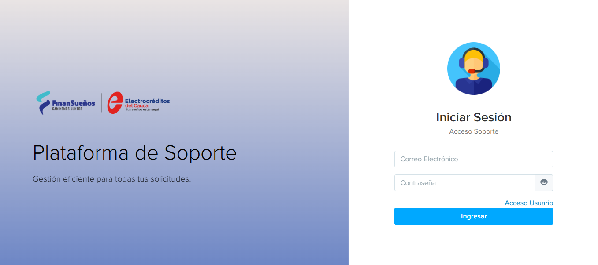
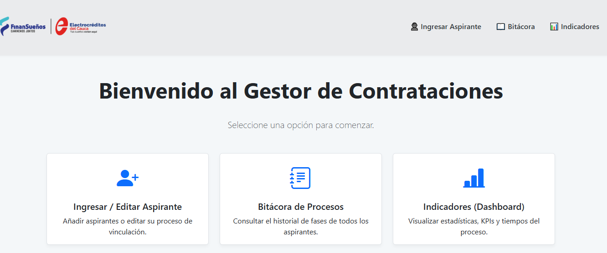
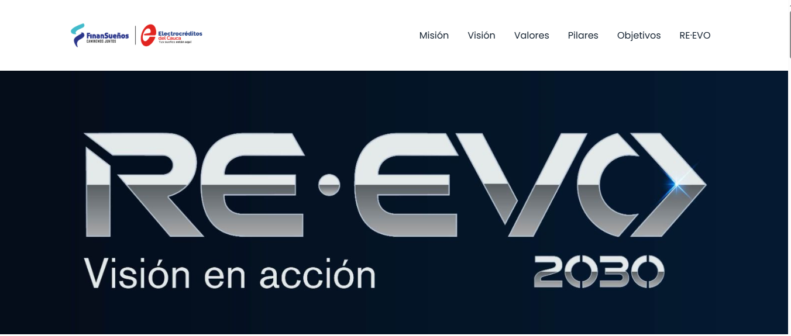

¿Quién Soy?
Soy Julián Narváez, Ingeniero de Sistemas con una misión clara: hacer que la tecnología trabaje para tu negocio, no al revés.
Por más de 12 años he ayudado a empresas a transformar sus procesos con soluciones tecnológicas a la medida. Mi enfoque es simple: entender tu problema y construir la herramienta que lo resuelve, sin vueltas ni sobrecostos.
Popayán, Colombia | Español (Nativo), Inglés (Intermedio) | COT (UTC-5)
¿Qué Puedo Hacer por Ti?
Soluciones tecnológicas diseñadas para resolver problemas reales de negocio
Desarrollo Web Full Stack
Aplicaciones web empresariales a medida con PHP, Python, MySQL y tecnologías modernas. Desde sistemas de gestión hasta plataformas complejas.
- Arquitectura escalable
- UI/UX intuitiva
- Código mantenible
Automatización de Procesos
Scripts inteligentes en Python/PHP que eliminan tareas repetitivas y reducen errores humanos, ahorrando tiempo valioso.
- Web scraping y recopilación de datos
- Procesamiento automático de archivos
- Integración entre sistemas
Creación de Páginas Web
Desde landing pages profesionales hasta tiendas online completas. Diseño sitios web modernos, rápidos y optimizados para convertir visitantes en clientes.
- Landing pages de alto impacto
- Tiendas virtuales (e-commerce)
- Sitios corporativos y portafolio
Administración de Infraestructura
Gestión integral de servidores Linux/Windows, optimización de rendimiento y seguridad de la información.
- Configuración y mantenimiento
- Backup y recuperación
- Monitoreo proactivo
Auditoría y Seguridad
Evaluación de vulnerabilidades, implementación de mejores prácticas de seguridad y cumplimiento normativo.
- Análisis de seguridad
- Políticas y procedimientos
- Gestión de incidentes
Consultoría en Transformación Digital
Te ayudo a identificar oportunidades de mejora tecnológica y diseñar una hoja de ruta para modernizar tus operaciones.
- Diagnóstico tecnológico
- Plan de acción estratégico
- Acompañamiento en implementación
Sin compromiso. Te respondo en menos de 24 horas.
Mi Trayectoria
Especialización en IoT
Graduado en: diciembre de 2025
Posgrado enfocado en el diseño, desarrollo e implementación de soluciones conectadas, abarcando desde el hardware y sensores hasta las plataformas de software y análisis de datos.
Ingeniero de Sistemas
Graduado en: agosto de 2025
Ingeniero de Sistemas con experiencia en desarrollo de software, administración de redes y bases de datos, gestión de TI y auditoría en seguridad de la información. Orientado a la innovación y la investigación tecnológica.
Coordinador de TI
Arpesod Asociados SAS
2013 - A la fecha (12 años)
Lidero la evolución tecnológica en Arpesod Asociados, transformando el área de TI en una unidad de desarrollo estratégico. Mi rol combina la ingeniería de software con la administración de sistemas: diseño y despliego aplicaciones web a medida y scripts de automatización (Python/PHP) que optimizan los procesos críticos del negocio, garantizando su rendimiento sobre una infraestructura de servidores Linux y Windows que gestiono integralmente.
Logros destacados:
- Reducción del 70% en tiempos de auditoría de inventario mediante automatización
- Implementación de 4+ sistemas internos que mejoraron la eficiencia operativa
- Gestión de infraestructura TI sin incidentes críticos por 3+ años
Auxiliar de Sistemas
Universidad Autónoma del Cauca
2010 - 2012
Soporte nivel 1 a usuarios internos, administración de servidores Linux y gestión de seguridad informática.
Diplomado en Desarrollo web
Universidad Tecnológica de Pereira & MinTIC
Terminado en: Diciembre 2021
Programa de formación de alto rendimiento con una intensidad de 800 horas (teórico-prácticas). Adquirí competencias avanzadas en el ciclo completo de desarrollo de software, abarcando desde la lógica de programación y bases de datos, hasta la construcción de aplicaciones web escalables utilizando arquitecturas modernas, metodologías ágiles (Scrum) y despliegue en la nube.
Esp. Tecnológico en Seguridad en Redes de Computadores
Sena Regional Cauca
Graduado en: noviembre 2010
Capacidad para diagnosticar, diseñar, implementar y monitorear sistemas de seguridad de la información basados en normas internacionales. Experto en desarrollo de planes de seguridad, gestión de incidentes, políticas, SGSI y herramientas como IDS/firewalls.
Stack Tecnológico
Backend Development
Frontend Development
DevOps & Infraestructura
Análisis & Herramientas de Negocio
 Power BI 3+ años
Power BI 3+ añosProyectos que Generan Resultados

Sistema de Inventario de Activos TI
- Redujo auditorías de 2 semanas a 2 horas (98% reducción)
- Eliminó pérdida de equipos por falta de trazabilidad
- ROI positivo en 3 meses por ahorro de tiempo
- PHP
- MySQL
- Bootstrap
- JavaScript

Sistema de Mesa de Ayuda con Motor de Flujos
- Tiempo de respuesta promedio reducido de 48h a 8h
- 100% de trazabilidad en solicitudes críticas
- Satisfacción de usuarios internos aumentó a 92%
- PHP
- MySQL
- JavaScript
- Chart.js
- jQuery

Gestor de Vinculación RRHH
- Ciclo de contratación reducido de 30 a 15 días promedio
- 0% pérdida de documentación de candidatos
- Estandarización del 100% del proceso
- PHP
- MySQL
- JavaScript

RE-EVO 2030 Landing Page Interactiva
- Tasa de engagement del 85% durante el evento
- Reducción de impresiones físicas (ahorro y sostenibilidad)
- Plataforma reutilizable para futuros eventos
- HTML5
- CSS3
- JavaScript
¿Necesitas Optimizar tus Procesos?
Estoy disponible para proyectos freelance, consultoría y oportunidades de colaboración a largo plazo. Si tienes un desafío tecnológico, hablemos sobre cómo puedo ayudarte a resolverlo.
Email: jullianxitoso@gmail.com
Ubicación: Popayán, Colombia (COT UTC-5)
Respuesta: Menos de 24 horas